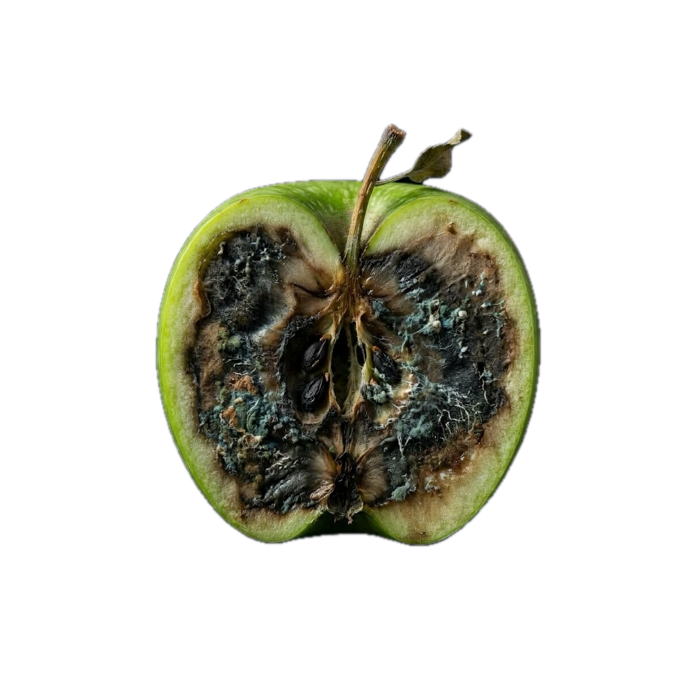
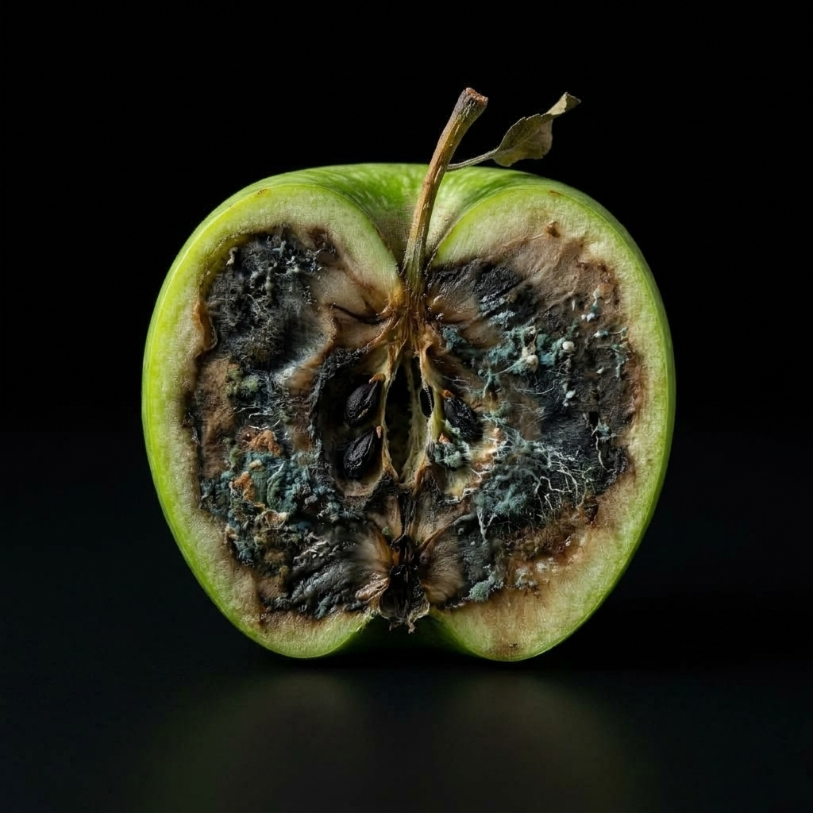
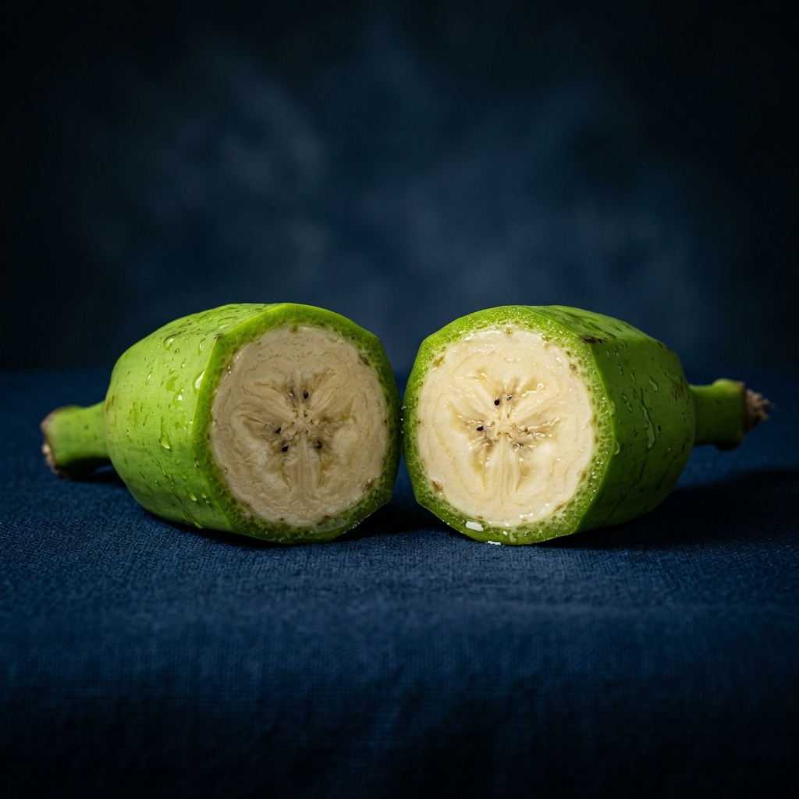

This fruit looks fresh
but is it really?



Guava’s post-harvest loss rate in India
The highest recorded loss of any fruit tracked nationwide. Tomato follows close behind at ~11.6%.
Annual value of agricultural losses
Total post-harvest harvest value lost each year in India, with fruits & vegetables the single hardest-hit category.
Non-destructive test methods available
Zero methods exist today for a storage operator to check internal freshness before catastrophic loss happens.
Ripening chambers & packhouses
One decaying fruit hidden inside a crate emits gas that triggers an invisible chain reaction of rot across entire stacks.
Long-haul transporters & aggregators
Shipments arrive with internal rot causing mass rejections, leading to endless disputes over who is liable for the decay.
Supermarket hubs & processors
QA teams cut and destroy sample fruits to check quality, yet still miss internal decay, resulting in rotting shelf stock.
A non-destructive bio-impedance scanner that reveals internal freshness in seconds — without sacrificing a single fruit.
Workers inspect the exterior of the fruit on fast-moving sorting lines. It completely misses internal cellular decay until rot breaks the skin days later.
Bio-impedance measures internal cellular integrity, detecting decay days before any outward visual symptoms appear.

QA teams slice open random samples to check internal quality. Destroys saleable product and can realistically only test <1% of a batch.
100% Non-destructive. Our sensors pass harmless electrical frequencies through the fruit, leaving every single item perfectly intact and saleable.

Extracting juice or tissue for laboratory analysis is extremely slow, messy, and creates a massive bottleneck at the intake dock.
Sub-2 second digital readout. Operates instantaneously directly on the warehouse floor, fitting seamlessly into high-throughput operations.
Proved bio-impedance spectroscopy accurately tracks membrane degradation in apples up to 10 days before visual rot appears.
Established that low-frequency electrical resistance is a highly reliable proxy for moisture loss and cell wall breakdown in tropical fruits.
Confirmed that non-destructive electrical impedance measurements correlate perfectly with destructive Brix and firmness tests.
Demonstrated that integrating bio-impedance sensors in supply chains reduces post-harvest waste by up to 34% by enabling predictive routing.
Sourcing a variety of fresh fruits/veggies at day zero.
Storing samples in an identical, strictly controlled climate.
Daily bio-impedance data collection as degradation occurs.
Running k-Nearest Neighbors to match values and train.
Ready to bring intelligent, non-destructive quality control to the global supply chain.